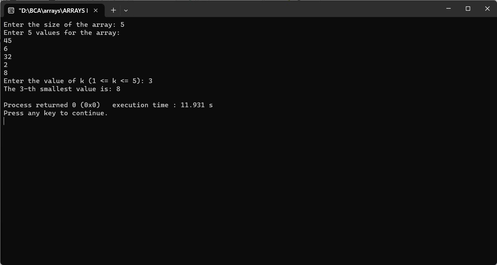

Enter an array from user and find the k-th smallest value
#include
int main() {
int size, k;
printf("Enter the size of the array: ");
scanf("%d", &size);
int arr[size];
printf("Enter %d values for the array:\n", size);
for (int i = 0; i < size; i++) {
scanf("%d", &arr[i]);
}
printf("Enter the value of k (1 <= k <= %d): ", size);
scanf("%d", &k);
if (k >= 1 && k <= size) {
for (int i = 0; i < size - 1; i++) {
for (int j = i + 1; j < size; j++) {
if (arr[i] > arr[j]) {
int temp = arr[i];
arr[i] = arr[j];
arr[j] = temp;
}
}
}
printf("The %d-th smallest value is: %d\n", k, arr[k - 1]);
} else {
printf("Invalid value of k. k should be between 1 and %d\n", size);
}
return 0;
}
